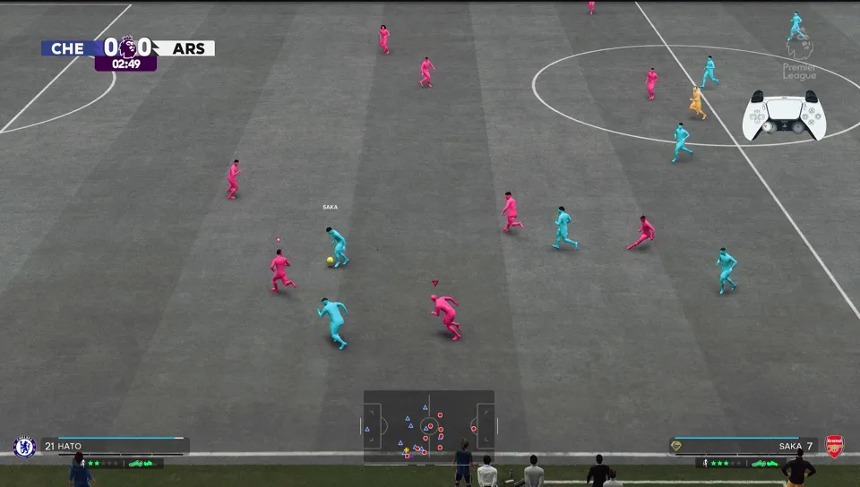

EA FC agent
An agent that plays EA FC on an unmodified PS5 through a software perception, decision and action loop. Teaching it is the point: scripted logic is only scaffolding, and the investment goes into learning from demonstrations of the owner's own play.
In development. Its first live matches were played offline, against the CPU, with the owner watching. The repo is private.

The problem
The console is a sealed appliance: no API, no memory access, no mods. It offers exactly the two interfaces it gives a person, video out and controller in, so the agent has to see the way a player sees and act the way a player acts. And the game runs at 60 frames a second whether the agent is ready or not, with no pause, no reset, no parallel copies and no speed-up.
Capture: eyes and hands kept apart
- Eyes: an HDMI capture card on a Linux server, read through v4l2 and OpenCV at 1080p and 60 frames a second. A dedicated card is deterministic, where a streamed picture is compressed and jittery.
- Hands: the console only accepts its own controllers, but Sony's Remote Play protocol takes controller input over the network. So chiaki-ng runs on the server over a direct ethernet cable, and a Python uinput virtual gamepad presents the agent to it as a controller. Remote Play survives purely as hands; its video is ignored.
Keeping the two apart gives them independent failure modes, so bring-up debugs one at a time. The Linux server runs the loop, because uinput and v4l2 are Linux-only; a Mac does the training.
Perception: the radar first
The game draws its own top-down radar: every player and the ball as small marks. The agent parses it with classic computer vision, geometry first. Every mark is measured — its area, fill, circularity and holes — and classified by shape; colour decides only which team it belongs to. Colour alone could not separate what shape can, because the game fades the radar as play moves down the screen.
The game's own accessibility settings did the rest: High Contrast Mode with the pitch saturation at its minimum turns the radar's background grey (its median saturation measured 156 before and 0 after), and moving the opponents' radar colour off red keeps them apart from the selected-player ring. In the first live matches, the radar was read on 99.5% of ticks in open play.
State: one vector
What perception hands on is not raw detections but a 116-number state vector centred on the player being controlled: that player, the ball, the five nearest opponents and six nearest team-mates with their velocities from a frame-to-frame tracker, a summary of team shape, and the match context. It is always oriented as if attacking to the right, and mirrored copies double the training data. The layout follows EA's own SEED research on agents for FC 25.
The radar has limits, and the design states them up front: it carries no ball height, no facing and no animation, so a policy built on it should learn positional play and passing shape and stay weak in duels and in the air. A second eye, a frozen pretrained visual encoder on the main picture, is designed for when measurement shows that failure.
Decision: learned from demonstrations
Reinforcement learning from scratch is hopeless here — matches take fifteen minutes of wall-clock time and nothing can be reset or run in parallel. Imitation fits instead: because the owner's controller already routes through the server, every session played is a labelled dataset for free, controller events paired with frames and state.
- A simulator prior. A policy was pretrained on Google Research Football, whose observations are close to this state vector, and put to a pre-registered A/B against training from scratch. Judged on how well each imitates the owner on sittings it never saw, the simulator start won: better on 24 of 32 episodes, with the 95% interval entirely above zero, and ahead on both FC 26 and FC 27.
- The deployed brain is small on purpose: a shared 116 → 512 → 512 trunk with four heads — direction, sprint, dribble and a tap for passes and shots. The Mac trains it and exports plain weights; the server runs the forward pass in numpy and never installs PyTorch.
Action: intents, not stick voltages
Every 10 Hz tick, the decision is a set of intents. Direction, sprint and dribble are sent as absolute pad states every tick, and the mapper is idempotent, so only real changes reach the pad; a tap fires when its probability clears a calibrated threshold. In the first live matches the loop cost 6.2 ms of compute per tick at the median.
- It boots disarmed, and arms only when told to.
- It disarms itself after five seconds without a valid radar — menus, replays, half-time — and re-arms once the radar has been back for three ticks, unless told to stay down.
- Every run logs every tick: a hash of the state, the intents applied, each head's output and the pad edits.
The test gates
- Golden clips. Perception changes are gated by tests against real recorded footage, so computer-vision work needs no console. Seven gates have been live and passing since August, including a radar parse under 8 ms at the 90th percentile.
- A parity gate. Live mode refuses to start unless the server's numpy forward pass matches the Mac's reference outputs within a fixed tolerance on every head.
- A test suite of 527 tests on the server side.
- Look at the data. One early recording passed every mechanical check — frame count, readability, pixel variance — and was sixty seconds of a menu. Statistical checks cannot verify meaning.
Where it stands
The first live matches, on 25 September 2026, did not pass their gate, and the logs say why. The runtime did its job: the gate passed on every start, perception was healthy, nothing stuck and disarming worked. The brain did not: it stays on its player and sprints to the end of the pitch, and it never passes or shoots — its tap probability peaked at 0.107 against a threshold of 0.1123. The next version, drafted and waiting for the owner's review, calibrates that threshold on live play, weights the tap head so it can learn to shoot, and gives the network a short history of states.